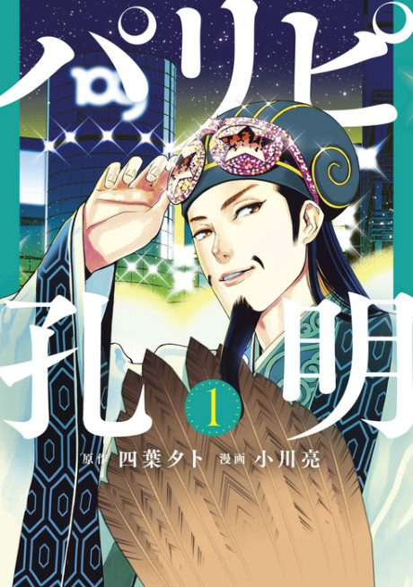

Ya Boy Kongming!
パリピ孔明
After the anime, read the manga from Chapter 29.
7.9AniList score
—Animeter, no votes yet
12episodes
Rate it or report where you stopped
Anime finished. Where does the manga pick up?
Start at Chapter29
The anime adapts the manga up to chapter 28, so start at chapter 29 (volume 7). The manga is still ongoing.
128ongoing
Season 1Start reading here